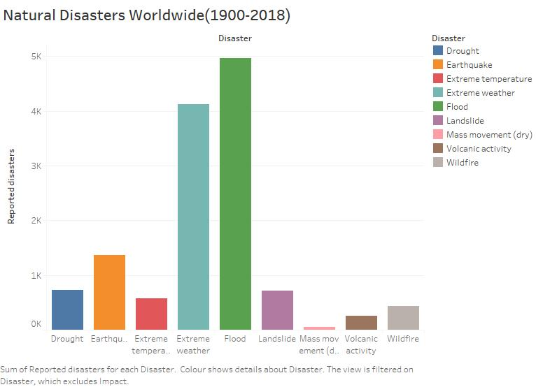
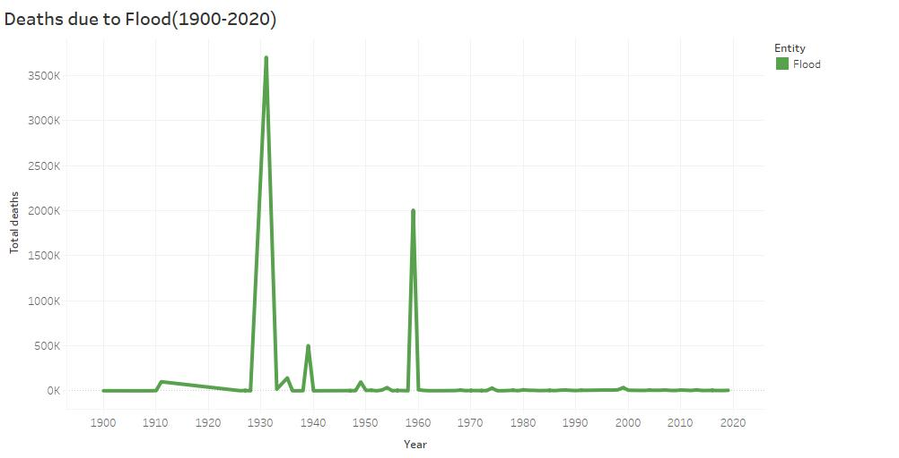
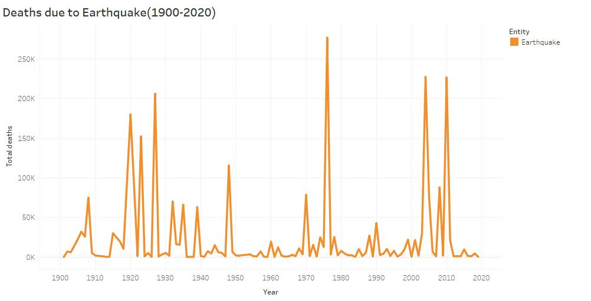
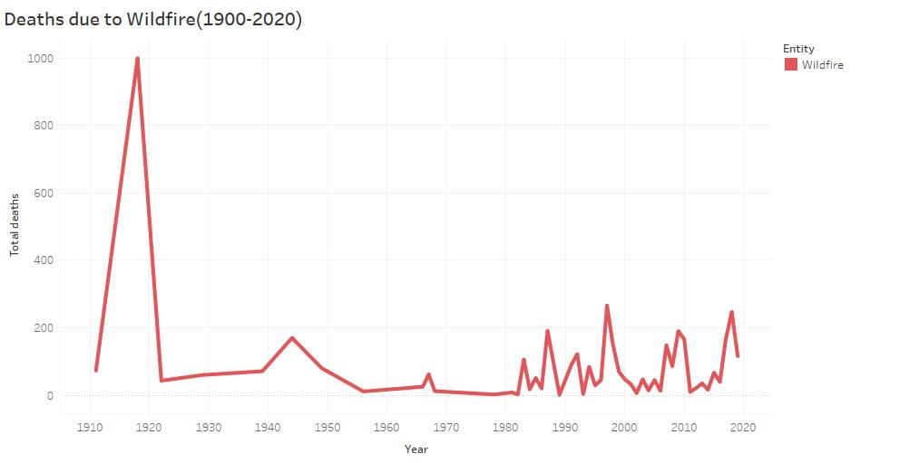
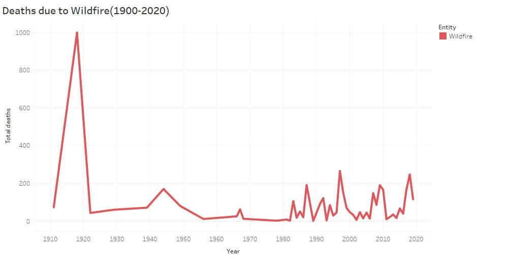
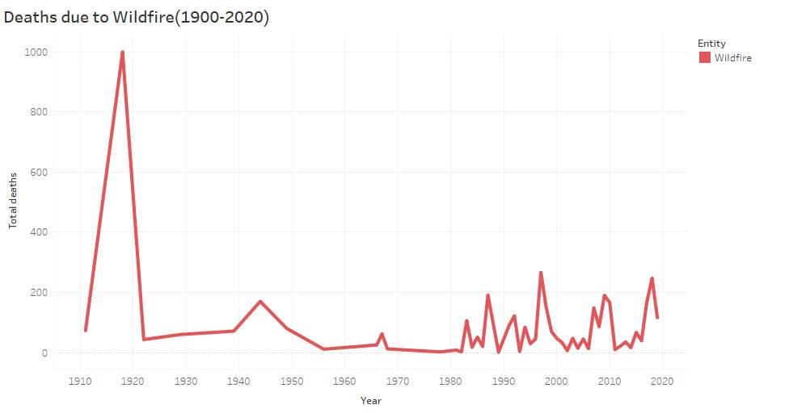

This is a platform where we spread knowledge about various Natural Disasters and create awareness about the same. We also aim to help people affected by Natural Calamities by bringing together contributor from around the World.
The chart below represents the Number of various disasters during the year 1900-2018

Here is the statistics showing loss of human resource due to various disasters


 

